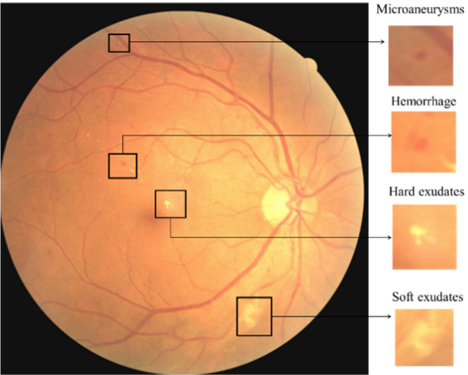
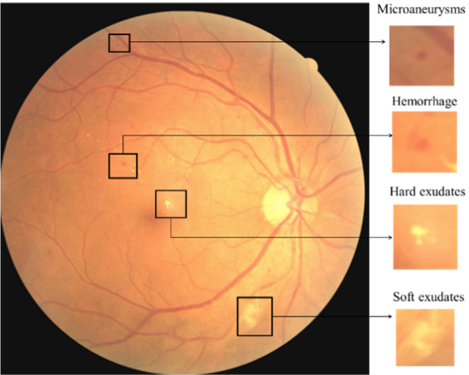

Deep Learning in Diabetic Retinopathy
Revisiting deep learning based classification methods of diabetic retinopathy and macular edema in 2D fundus photography
Serifovic, Muriz
2021-06-15
Introduction
According to recent estimates, diabetes mellitus (DM) is affecting 463 million people worldwide aged 20-79 years
and this number is projected to rise to approximately 700 million by 2045Williams,
Rhys et al. “Global and regional estimates and projections of diabetes-related health expenditure: Results
from the International Diabetes Federation Diabetes Atlas, 9th edition.” Diabetes research and clinical
practice vol. 162 (2020): 108072. doi:10.1016/j.diabres.2020.108072.
One common complication which arises from DM is diabetic retinopathy (DR). DR is characterized by progressive
vascular disruptions in the retina caused by chronic hyperglycemia and is mainly classified in two categories:
non-proliferative diabetic retinopathy (NPDR) and proliferative diabetic retinopathy (PDR). The five stages of DR are classified as 1. No apparent retinopathy 2. Mild NPDR 3. Moderate NPDR 4. Severe NPDR 5. PDR. Almost 40% of
diabetic patients have DR, from which about 5% of patients face vision-threatening complications. Prophylactic
treatment is crucial, as left untreated, DR may result in irreversible blindnessTsiknakis N,
Theodoropoulos D, Manikis G, et al. Deep learning for diabetic retinopathy detection and classification
based on fundus images: A review. Comput Biol Med. 2021;135:104599.
doi:10.1016/j.compbiomed.2021.104599.
Delapava, M., R'ios, H.,
Rodr'iguez, F.J., Perdomo, O.J., & Gonz'alez, F.A. (2021). A deep learning model for classification of
diabetic retinopathy in eye fundus images based on retinal lesion detection. Symposium on Medical
Information Processing and Analysis.
Although initial diagnosis of DR may be based on functional changes
in electroretinography (ERG), retinal blood flow and retinal blood vessel
calibre (Tsiknakis et al., 2021), in clinical practice early diagnosis is based on fundus examination.
According to Delapava et al. (2021) and Garifullin (2021) fundus photography provides information on the presence of retinal
biomarkers such
as microaneurysms (MA)According to Garifullin "microaneurysms are one of the earliest signs of DR and
resemble red small dots which are caused by damages to the retinal capillary walls".,
hemorrhages (HE)"Hemorrhages are red lesions that appear after ruptured microaneurysms. Hemorrhages are bigger than microaneurysms and have unclear edges"., exudates (EX)Accumulations of lipids under the retinal layer, hard exudates are yellow lesions with high contrast and clear edges. , cotton wool spots (CWS)"Soft exudates which are also called cotton wool spots are exudates with blurred
edges and contrast. They are the result of obstructed arterioles.", intraretinal microvascular
abnormalities (IRMA), venous beading (VB), and neovascularization (NV).
(CC BY 4.0) From Alyoubi, Wejdan L., Maysoon F. Abulkhair, and Wafaa M. Shalash. 2021. "Diabetic Retinopathy Fundus Image Classification and Lesions Localization System Using Deep Learning" Sensors 21, no. 11: 3704. https://doi.org/10.3390/s21113704.
Deep Learning Models
There exists an extensive body of literature on retinal image analysis with resepct to retinopathic diseases
and other retinal disorders (macular edema, age-related macular degeneration and glaucoma).
In recent years, deep learning systems (DLS) have established themselves as a new de facto method for
computer-aided diagnosis in several
diseases. For a comprehensive literature review, we refer the reader to Tsiknakis et al. (2021) and Stolte et al. (2020). Due to a tightly knitted collaborative work with practicing clinicians, these methods have started
to escape clinical research settings
and are getting deployed in a growing number of healthcare facilities worldwide.Daskivich LP et al.
Implementation and Evaluation of a Large-Scale Teleretinal Diabetic Retinopathy Screening Program in the
Los Angeles County Department of Health Services. JAMA Intern Med. 2017;177(5):642–649.
In the light of the aforementioned problem regime, there exist different subproblems, such as DR grading, retinal blood vessel segmentation, lesion detection and the detection of other biomarkers.
On this direction, we review and highlight some publications which have shaped the forthcoming trends in deep learning based retinal image classification.
Zilly et al. (2017) introduce a boosted convolution neural network (CNN) for the segmentation of optic disc (OD) and optic
cup (OC) from retinal fundus photography. A logistic
regression classifier generated the final pixel probability maps using convolutional outputs, L*a*b color values, and centricity. An unsupervised graph
cut smoothed the probability map, and a convex hull transformation connected
disjointed regions. In the preprocessing stage, they apply entropy filtering for each color channel and thus brightening pixels which have dissimilar neighbors.
During the learning stage, the weights are updated
$$v_{i} \leftarrow \frac{v_{i} \cdot \exp \left(-y_{i} h_{n}\left(\mathbf{x}_{\mathbf{i}}\right)\right)}{Z_{n}}$$
Zilly, J. G. & Buhmann, J. M. & Mahapatra, D., (2015) “Boosting Convolutional Filters with Entropy Sampling for Optic Cup and Disc Image Segmentation from Fundus Images”, Ophthalmic Medical Image Analysis International Workshop 2(2015), p.153-160. doi: https://doi.org/10.17077/omia.1039
where $v_i$ is simply the initialization $\frac{1}{m}$, $h_n$ is a learned filter with weights $w$ and bias $b$ in the optimization problem $\underset{w}{\operatorname{minimize}} \quad \sum_{i=1}^{N} v_{i} \cdot\left|y_{i}-x_{i} w\right|.$
They surpass previous solutions which rely on hand crafted features.
Jiang et al. (2019) propose a retinal vessel segmentation model based on an encoder-decoder CNN with skip connections.
The structure of the encoder is a residual network where each residual module consists of three convolutional operations,
$$V_{c}^{\prime}=\sum_{i=1}^{W} \sum_{j=1}^{H}\left(V_{c}(i, j)+V_{c}^{3}(i, j)\right).$$
To increase the receptive field, they improve the feature extraction ability by reducing the downsampling factor which in turn alleviates the loss of feature information for tiny vessels.
They use dilated convolutions, given by $y[i]=\sum_{k=1}^{K} x[i+d \times k] \times w[k]$.
To further improve the detection performance of tiny vessels and vessel edges, they introduce a Multi-Scale Information Fusion model (MSIF).
Y. Jiang, N. Tan, T. Peng and H. Zhang, "Retinal Vessels Segmentation Based on Dilated Multi-Scale Convolutional Neural Network," in IEEE Access, vol. 7, pp. 76342-76352, 2019, doi: 10.1109/ACCESS.2019.2922365.
They use four parallel convolution layers and one global average pooling layer to capture feature information
on the feature $c^{\textrm{th}}$ $z$
$$
z_{c}=\frac{1}{W^{\prime} \times H^{\prime}} \sum_{i=1}^{W} \sum_{j=1}^{H} z_{c}(i, j).
$$
In the decoder module, they upsample to the original spatial dimension and use skip connections to mitigate the difficulty of upsampling tiny vascular tissue.
During training stage, they use the $L2$ regularization term and jointly optimize the network with
$$
\mathcal{L}(\chi ; \theta)=\lambda\|W\|_{2}^{2}-\left[\sum_{x \in \chi} \phi(x, \ell(x))+\|y-\ell(\chi)\|\right],
$$
where the hyperparameter $\lambda$ controls the regularization term, $\phi(x, \ell(x))$ denotes the cross entropy loss
and $\ell(\chi)$ is the segmentation prediction by the network.
To solve the pixel-by-pixel retinal blood vessel segmentation problem, Jin et al. (2019) introduce the Deformable U-Net (DUNet). They introduce deformable convolution blocks both in the encoder
and decoder to capture retinal vessels adaptively, accordingly to different vessel scales and shapes.
Jin, Q., Meng, Z., Pham, T., Chen, Q., Wei, L., & Su, R. (2019). "DUNet: A deformable network for retinal vessel segmentation", Knowledge-Based Systems, Volume 178, doi: https://doi.org/10.1016/j.knosys.2019.04.025.
In the deformable convolution, offset $\Delta m_{i}$ is added to the grid sampling locations,
$$
\mathbf{y}\left(m_{0}\right)=\sum_{m_{i} \in G} \mathbf{w}\left(m_{i}\right) \cdot \mathbf{x}\left(m_{0}+m_{i}+\Delta m_{i}\right),
$$
where $m_0$ is each location from the feature map $\mathbf{y}$, $\mathbf{x}$ denotes the input feature map, $\mathbf{w}$ denotes the weights of the sampled value,
$m_i$ is the location in the convolutional kernel.
They achieve state-of-the-art results, achieving marginally improved results in comparison to unsupervised methods and other supervised methods.
To solve the quinary classification problem (DR grading), Lin et al. (2018) introduce a multi-stage method in which an Attention Fusion Network (AFN) is fed with scaled original images and boundary
boxes (lesion probability map) of MA and HE in fundi images. In order to detect the lesions and devalue unnecessary lesion information, they introduce the anti-noise Center-Sample detector which consists of three parts: shared feature extractor,
classification/bounding box detecting header and Noisy Sample Mining module. Eventually, they generate $f_{\text {img }}$ and $f_{\text {lesion }}$ which
Lin Z. et al. (2018) A Framework for Identifying Diabetic Retinopathy Based on Anti-noise Detection and Attention-Based Fusion. In: Frangi A., Schnabel J., Davatzikos C., Alberola-López C., Fichtinger G. (eds) Medical Image Computing and Computer Assisted Intervention – MICCAI 2018. MICCAI 2018. Lecture Notes in Computer Science, vol 11071. Springer, Cham. https://doi.org/10.1007/978-3-030-00934-2_9
are features extraced from two CNNs with the fundi images and lesion maps as input.
They concatenate the features with the weight maps $W_{\text {img }}$ and $W_{\text {lesion }}$ produced by the attention network (consisting of a 3 × 3 Conv, a ReLU, a dropout, a 1 × 1
Conv, and a Sigmoid layer) to produce the weighted sum $s(\cdot)$ at position $(i, j)$ and channel $c$
$$
s(i, j, c)=W_{\text {img }}(i, j, c) \circ f_{\text {img }}(i, j, c)+W_{\text {lesion }}(i, j, c) \circ f_{\text {lesion }}(i, j, c),
$$
where $\circ$ denotes the Hadamard product. Their approach outperforms state-of-the-art methods on multiple datasets.
Interpretability in deep learning
A preferable property for clinicians of a deep learning model would be to gain some, if not a full insight in the underlying model decision process.
Torre et al. (2018) propose a receptive field score propagation model which highlights an underlying
J. de la Torre, A. Valls and D. Puig (2018), A deep learning interpretable classifier for diabetic retinopathy disease grading, Neurocomputing, https://doi.org/10.1016/j.neucom.2018.07.102
notion of relevance of each pixel for the DR grading output, comparable to existing class activation maps.
The novelty is that their proposed method allows for the integration of regular building blocks of SOTA networks, such as batch normalization layer and dropout.
Let $T_{L_i}$ be the score of layer $L_i$ where $T_{L_{i+1}}=T_{L_i}+T_c$ and $o_{L_i}$ the activation value, then $T_{L_i} \propto o_{L_i}$.
The score of the output layer $\sigma$ is
$$
T_{\sigma}=\sum_{i=1}^{\sigma}\left(\sum T_{c}\right)+\left(\sum T_{\text {in }}\right).
$$
Let $T_{m}=\lambda_{m} \phi\left(s_{i}\right)$ be the score of activation function $\phi$. Notably, after the first
order approximation$f(x) \approx f(\bar{x})+\frac{d}{d x} f(\bar{x})(x-\bar{x})$ using Taylor expansion the score propagation becomes
$$
T_{m}=\lambda_{m}\left[\phi\left(s_{i}^{*}\right)-\phi^{\prime}\left(s_{i}^{*}\right) s_{i}^{*}\right]+\lambda_{m} \phi^{\prime}\left(s_{i}^{*}\right) s_{i}.
$$
Similarly, for a batch normalization layer with channel $c$ the score becomes
$$
T_{m}=\lambda_{m}\left(\beta_c-\gamma_c \frac{\mu}{\sigma}\right)+\lambda_{m} \frac{\gamma_c}{\sigma} s_{i}
$$
with a channel-wise affine transformation parameterized through $\gamma_{c}, \beta_{c}$.
Their pixel importance map helps guide the interpretability for ophthalmologists and retinal specialists. They achieve comparable performance to existing DR grading architectures.
In a similar vein, Quellec et al. (2017) generate a heatmap with
Gwenolé Quellec, Katia Charrière, Yassine Boudi, Béatrice Cochener, Mathieu Lamard, "Deep image mining for diabetic retinopathy screening", Medical Image Analysis, Volume 39, 2017, Pages 178-193, doi: https://doi.org/10.1016/j.media.2017.04.012.
improved sensitivity analysis while predicting the severity of DR.
They suggest that existing methods are either maladapted to highlight tiny lesions or produce artifacts.
In Simonyan et al. (2013) the sensitivity analysis (i.e. the contribution $\Gamma$ that a pixel $p$ in each color channel $\text{ch} \in {\{r, g, b}\}$ generates for a predicted class $c$) is given by
$$
\Gamma_{p}=\left\|\left(\frac{\partial m\left(\chi\right)}{\partial \chi_{p}}\right)\right\|_{q}
$$
where $\chi$ is the input data and $\|\cdot\|_{q}, q \in \mathbb{N}$ is the q-norm. Because of the aforementioned problems, they introduce hue-constrained sensitivity analysis in which "[their method] essentially focuses on pattern enhancements or
attenuations". The changes include that all three color
Simonyan, K., Vedaldi, A. and Zisserman, A. (2013) Deep Inside Convolutional Networks: Visualising Image Classification Models and Saliency Maps. arXiv preprint arXiv:1312.6034.
channels of each pixel are to be multiplied by the same factor. Respectively, $\Gamma$ becomes
$$
\Gamma'_{p}=\left\|\left(\frac{\partial m\left(t \circ \chi\right)}{\partial t_{p}}\right)\right\|_{q}
$$
where $\circ$ denotes the Hadamard product and $t$ is a binary mask. For their heatmap generation they add a term to their loss function which maximizes sparsity in some constructive way, and thus reduces artifacts.
A natural choice for estimating uncertainties and interpretability is found with a model of probabilistic nature. Garifullin et al. (2021)
Garifullin, A., Lensu, L., & Uusitalo, H. (2021). Deep Bayesian baseline for segmenting diabetic retinopathy lesions: Advances and challenges. Computers in biology and medicine, 136, 104725. https://doi.org/10.1016/j.compbiomed.2021.104725
remodel the lesion segmentation problem
through a Bayesian Network perspective in which they treat the parameters of a dense fully connected network (FC) as random variables and utilize stochastic variational approximation called Monte-Carlo dropout.
More formally, epistemic uncertainty can be modeled by calculating the posterior predictive
$$
p({y} \mid {x}, \tau)=\int p({y} \mid {x}, {\theta}) p({\theta} \mid {\tau}) \mathrm{d} {\theta},
$$
where $\tau$ are tuples of image and corresponding ground-truth segmentation map and $\theta$ the model parameters.
In the training stage, the goal is to minimize the difference between the true posterior and the approximation where
$$
\mathcal{L}_{\mathrm{VI}}({\omega})=\int q_{\theta}({\omega}) \log p(\tau, {\omega}) \mathrm{d} {\omega}-D_{\mathrm{KL}}\left(q_{\theta}({\omega}) \| p({\omega})\right)
$$
and $D_{\mathrm{KL}}$ is the Kullback-Leibler divergence$D_{K L}(p(x) \| q(x))=\int_{-\infty}^{\infty} p(x) \ln \frac{p(x)}{q(x)} d x,$ for probability distributions $p$ and $q$..
The first term is usually approximated with Monte-Carlo methods, thus
$$
\mathcal{L}({\omega})=\sum_{i=1}^{N} \mathcal{L}\left({y}_{i} \mid {x}_{i}, {\omega}\right)+\mathcal{J}({\omega})
$$
where $i$ is the index of the training sample, $N$ is the total number of samples in $\tau$ and $\mathcal{J}$ a regularization term.
They achieve low sensitivity and different performances depending on lesion type, achieving comparable results to previous work.
Conclusion
While the body of research in retinal image analysis is vast, the past seven years have largely been dominated by the introduction of new techniques related
to the computer vision field (e.g. CNN, residual networks, U-Net architecture, ...). With recent advancements in semi and self-supervised learning, reinforcement learning, the introduction of the Vision Transformer (outperforming SOTA residual networks) and the availability of large language models,
the medical community may steer into promising, fruitful directions across many different domains for even more precise computer-aided diagnosis.
Introduction
According to recent estimates, diabetes mellitus (DM) is affecting 463 million people worldwide aged 20-79 years and this number is projected to rise to approximately 700 million by 2045Williams, Rhys et al. “Global and regional estimates and projections of diabetes-related health expenditure: Results from the International Diabetes Federation Diabetes Atlas, 9th edition.” Diabetes research and clinical practice vol. 162 (2020): 108072. doi:10.1016/j.diabres.2020.108072. One common complication which arises from DM is diabetic retinopathy (DR). DR is characterized by progressive vascular disruptions in the retina caused by chronic hyperglycemia and is mainly classified in two categories: non-proliferative diabetic retinopathy (NPDR) and proliferative diabetic retinopathy (PDR). The five stages of DR are classified as 1. No apparent retinopathy 2. Mild NPDR 3. Moderate NPDR 4. Severe NPDR 5. PDR. Almost 40% of diabetic patients have DR, from which about 5% of patients face vision-threatening complications. Prophylactic treatment is crucial, as left untreated, DR may result in irreversible blindnessTsiknakis N, Theodoropoulos D, Manikis G, et al. Deep learning for diabetic retinopathy detection and classification based on fundus images: A review. Comput Biol Med. 2021;135:104599. doi:10.1016/j.compbiomed.2021.104599.
Delapava, M., R'ios, H., Rodr'iguez, F.J., Perdomo, O.J., & Gonz'alez, F.A. (2021). A deep learning model for classification of diabetic retinopathy in eye fundus images based on retinal lesion detection. Symposium on Medical Information Processing and Analysis. Although initial diagnosis of DR may be based on functional changes in electroretinography (ERG), retinal blood flow and retinal blood vessel calibre (Tsiknakis et al., 2021), in clinical practice early diagnosis is based on fundus examination. According to Delapava et al. (2021) and Garifullin (2021) fundus photography provides information on the presence of retinal biomarkers such as microaneurysms (MA)According to Garifullin "microaneurysms are one of the earliest signs of DR and resemble red small dots which are caused by damages to the retinal capillary walls"., hemorrhages (HE)"Hemorrhages are red lesions that appear after ruptured microaneurysms. Hemorrhages are bigger than microaneurysms and have unclear edges"., exudates (EX)Accumulations of lipids under the retinal layer, hard exudates are yellow lesions with high contrast and clear edges. , cotton wool spots (CWS)"Soft exudates which are also called cotton wool spots are exudates with blurred edges and contrast. They are the result of obstructed arterioles.", intraretinal microvascular abnormalities (IRMA), venous beading (VB), and neovascularization (NV). (CC BY 4.0) From Alyoubi, Wejdan L., Maysoon F. Abulkhair, and Wafaa M. Shalash. 2021. "Diabetic Retinopathy Fundus Image Classification and Lesions Localization System Using Deep Learning" Sensors 21, no. 11: 3704. https://doi.org/10.3390/s21113704.
Deep Learning Models
There exists an extensive body of literature on retinal image analysis with resepct to retinopathic diseases and other retinal disorders (macular edema, age-related macular degeneration and glaucoma). In recent years, deep learning systems (DLS) have established themselves as a new de facto method for computer-aided diagnosis in several diseases. For a comprehensive literature review, we refer the reader to Tsiknakis et al. (2021) and Stolte et al. (2020). Due to a tightly knitted collaborative work with practicing clinicians, these methods have started to escape clinical research settings and are getting deployed in a growing number of healthcare facilities worldwide.Daskivich LP et al. Implementation and Evaluation of a Large-Scale Teleretinal Diabetic Retinopathy Screening Program in the Los Angeles County Department of Health Services. JAMA Intern Med. 2017;177(5):642–649.
In the light of the aforementioned problem regime, there exist different subproblems, such as DR grading, retinal blood vessel segmentation, lesion detection and the detection of other biomarkers. On this direction, we review and highlight some publications which have shaped the forthcoming trends in deep learning based retinal image classification.
Zilly et al. (2017) introduce a boosted convolution neural network (CNN) for the segmentation of optic disc (OD) and optic cup (OC) from retinal fundus photography. A logistic regression classifier generated the final pixel probability maps using convolutional outputs, L*a*b color values, and centricity. An unsupervised graph cut smoothed the probability map, and a convex hull transformation connected disjointed regions. In the preprocessing stage, they apply entropy filtering for each color channel and thus brightening pixels which have dissimilar neighbors. During the learning stage, the weights are updated $$v_{i} \leftarrow \frac{v_{i} \cdot \exp \left(-y_{i} h_{n}\left(\mathbf{x}_{\mathbf{i}}\right)\right)}{Z_{n}}$$ Zilly, J. G. & Buhmann, J. M. & Mahapatra, D., (2015) “Boosting Convolutional Filters with Entropy Sampling for Optic Cup and Disc Image Segmentation from Fundus Images”, Ophthalmic Medical Image Analysis International Workshop 2(2015), p.153-160. doi: https://doi.org/10.17077/omia.1039 where $v_i$ is simply the initialization $\frac{1}{m}$, $h_n$ is a learned filter with weights $w$ and bias $b$ in the optimization problem $\underset{w}{\operatorname{minimize}} \quad \sum_{i=1}^{N} v_{i} \cdot\left|y_{i}-x_{i} w\right|.$ They surpass previous solutions which rely on hand crafted features.
Jiang et al. (2019) propose a retinal vessel segmentation model based on an encoder-decoder CNN with skip connections. The structure of the encoder is a residual network where each residual module consists of three convolutional operations, $$V_{c}^{\prime}=\sum_{i=1}^{W} \sum_{j=1}^{H}\left(V_{c}(i, j)+V_{c}^{3}(i, j)\right).$$ To increase the receptive field, they improve the feature extraction ability by reducing the downsampling factor which in turn alleviates the loss of feature information for tiny vessels. They use dilated convolutions, given by $y[i]=\sum_{k=1}^{K} x[i+d \times k] \times w[k]$. To further improve the detection performance of tiny vessels and vessel edges, they introduce a Multi-Scale Information Fusion model (MSIF). Y. Jiang, N. Tan, T. Peng and H. Zhang, "Retinal Vessels Segmentation Based on Dilated Multi-Scale Convolutional Neural Network," in IEEE Access, vol. 7, pp. 76342-76352, 2019, doi: 10.1109/ACCESS.2019.2922365. They use four parallel convolution layers and one global average pooling layer to capture feature information on the feature $c^{\textrm{th}}$ $z$ $$ z_{c}=\frac{1}{W^{\prime} \times H^{\prime}} \sum_{i=1}^{W} \sum_{j=1}^{H} z_{c}(i, j). $$ In the decoder module, they upsample to the original spatial dimension and use skip connections to mitigate the difficulty of upsampling tiny vascular tissue. During training stage, they use the $L2$ regularization term and jointly optimize the network with $$ \mathcal{L}(\chi ; \theta)=\lambda\|W\|_{2}^{2}-\left[\sum_{x \in \chi} \phi(x, \ell(x))+\|y-\ell(\chi)\|\right], $$ where the hyperparameter $\lambda$ controls the regularization term, $\phi(x, \ell(x))$ denotes the cross entropy loss and $\ell(\chi)$ is the segmentation prediction by the network.
To solve the pixel-by-pixel retinal blood vessel segmentation problem, Jin et al. (2019) introduce the Deformable U-Net (DUNet). They introduce deformable convolution blocks both in the encoder and decoder to capture retinal vessels adaptively, accordingly to different vessel scales and shapes. Jin, Q., Meng, Z., Pham, T., Chen, Q., Wei, L., & Su, R. (2019). "DUNet: A deformable network for retinal vessel segmentation", Knowledge-Based Systems, Volume 178, doi: https://doi.org/10.1016/j.knosys.2019.04.025. In the deformable convolution, offset $\Delta m_{i}$ is added to the grid sampling locations, $$ \mathbf{y}\left(m_{0}\right)=\sum_{m_{i} \in G} \mathbf{w}\left(m_{i}\right) \cdot \mathbf{x}\left(m_{0}+m_{i}+\Delta m_{i}\right), $$ where $m_0$ is each location from the feature map $\mathbf{y}$, $\mathbf{x}$ denotes the input feature map, $\mathbf{w}$ denotes the weights of the sampled value, $m_i$ is the location in the convolutional kernel. They achieve state-of-the-art results, achieving marginally improved results in comparison to unsupervised methods and other supervised methods.
To solve the quinary classification problem (DR grading), Lin et al. (2018) introduce a multi-stage method in which an Attention Fusion Network (AFN) is fed with scaled original images and boundary boxes (lesion probability map) of MA and HE in fundi images. In order to detect the lesions and devalue unnecessary lesion information, they introduce the anti-noise Center-Sample detector which consists of three parts: shared feature extractor, classification/bounding box detecting header and Noisy Sample Mining module. Eventually, they generate $f_{\text {img }}$ and $f_{\text {lesion }}$ which Lin Z. et al. (2018) A Framework for Identifying Diabetic Retinopathy Based on Anti-noise Detection and Attention-Based Fusion. In: Frangi A., Schnabel J., Davatzikos C., Alberola-López C., Fichtinger G. (eds) Medical Image Computing and Computer Assisted Intervention – MICCAI 2018. MICCAI 2018. Lecture Notes in Computer Science, vol 11071. Springer, Cham. https://doi.org/10.1007/978-3-030-00934-2_9 are features extraced from two CNNs with the fundi images and lesion maps as input. They concatenate the features with the weight maps $W_{\text {img }}$ and $W_{\text {lesion }}$ produced by the attention network (consisting of a 3 × 3 Conv, a ReLU, a dropout, a 1 × 1 Conv, and a Sigmoid layer) to produce the weighted sum $s(\cdot)$ at position $(i, j)$ and channel $c$ $$ s(i, j, c)=W_{\text {img }}(i, j, c) \circ f_{\text {img }}(i, j, c)+W_{\text {lesion }}(i, j, c) \circ f_{\text {lesion }}(i, j, c), $$ where $\circ$ denotes the Hadamard product. Their approach outperforms state-of-the-art methods on multiple datasets.
Interpretability in deep learning
A preferable property for clinicians of a deep learning model would be to gain some, if not a full insight in the underlying model decision process. Torre et al. (2018) propose a receptive field score propagation model which highlights an underlying J. de la Torre, A. Valls and D. Puig (2018), A deep learning interpretable classifier for diabetic retinopathy disease grading, Neurocomputing, https://doi.org/10.1016/j.neucom.2018.07.102 notion of relevance of each pixel for the DR grading output, comparable to existing class activation maps. The novelty is that their proposed method allows for the integration of regular building blocks of SOTA networks, such as batch normalization layer and dropout. Let $T_{L_i}$ be the score of layer $L_i$ where $T_{L_{i+1}}=T_{L_i}+T_c$ and $o_{L_i}$ the activation value, then $T_{L_i} \propto o_{L_i}$. The score of the output layer $\sigma$ is $$ T_{\sigma}=\sum_{i=1}^{\sigma}\left(\sum T_{c}\right)+\left(\sum T_{\text {in }}\right). $$ Let $T_{m}=\lambda_{m} \phi\left(s_{i}\right)$ be the score of activation function $\phi$. Notably, after the first order approximation$f(x) \approx f(\bar{x})+\frac{d}{d x} f(\bar{x})(x-\bar{x})$ using Taylor expansion the score propagation becomes $$ T_{m}=\lambda_{m}\left[\phi\left(s_{i}^{*}\right)-\phi^{\prime}\left(s_{i}^{*}\right) s_{i}^{*}\right]+\lambda_{m} \phi^{\prime}\left(s_{i}^{*}\right) s_{i}. $$ Similarly, for a batch normalization layer with channel $c$ the score becomes $$ T_{m}=\lambda_{m}\left(\beta_c-\gamma_c \frac{\mu}{\sigma}\right)+\lambda_{m} \frac{\gamma_c}{\sigma} s_{i} $$ with a channel-wise affine transformation parameterized through $\gamma_{c}, \beta_{c}$. Their pixel importance map helps guide the interpretability for ophthalmologists and retinal specialists. They achieve comparable performance to existing DR grading architectures.
In a similar vein, Quellec et al. (2017) generate a heatmap with Gwenolé Quellec, Katia Charrière, Yassine Boudi, Béatrice Cochener, Mathieu Lamard, "Deep image mining for diabetic retinopathy screening", Medical Image Analysis, Volume 39, 2017, Pages 178-193, doi: https://doi.org/10.1016/j.media.2017.04.012. improved sensitivity analysis while predicting the severity of DR. They suggest that existing methods are either maladapted to highlight tiny lesions or produce artifacts. In Simonyan et al. (2013) the sensitivity analysis (i.e. the contribution $\Gamma$ that a pixel $p$ in each color channel $\text{ch} \in {\{r, g, b}\}$ generates for a predicted class $c$) is given by $$ \Gamma_{p}=\left\|\left(\frac{\partial m\left(\chi\right)}{\partial \chi_{p}}\right)\right\|_{q} $$ where $\chi$ is the input data and $\|\cdot\|_{q}, q \in \mathbb{N}$ is the q-norm. Because of the aforementioned problems, they introduce hue-constrained sensitivity analysis in which "[their method] essentially focuses on pattern enhancements or attenuations". The changes include that all three color Simonyan, K., Vedaldi, A. and Zisserman, A. (2013) Deep Inside Convolutional Networks: Visualising Image Classification Models and Saliency Maps. arXiv preprint arXiv:1312.6034. channels of each pixel are to be multiplied by the same factor. Respectively, $\Gamma$ becomes $$ \Gamma'_{p}=\left\|\left(\frac{\partial m\left(t \circ \chi\right)}{\partial t_{p}}\right)\right\|_{q} $$ where $\circ$ denotes the Hadamard product and $t$ is a binary mask. For their heatmap generation they add a term to their loss function which maximizes sparsity in some constructive way, and thus reduces artifacts.
A natural choice for estimating uncertainties and interpretability is found with a model of probabilistic nature. Garifullin et al. (2021)
Garifullin, A., Lensu, L., & Uusitalo, H. (2021). Deep Bayesian baseline for segmenting diabetic retinopathy lesions: Advances and challenges. Computers in biology and medicine, 136, 104725. https://doi.org/10.1016/j.compbiomed.2021.104725
remodel the lesion segmentation problem
through a Bayesian Network perspective in which they treat the parameters of a dense fully connected network (FC) as random variables and utilize stochastic variational approximation called Monte-Carlo dropout.
More formally, epistemic uncertainty can be modeled by calculating the posterior predictive
$$
p({y} \mid {x}, \tau)=\int p({y} \mid {x}, {\theta}) p({\theta} \mid {\tau}) \mathrm{d} {\theta},
$$
where $\tau$ are tuples of image and corresponding ground-truth segmentation map and $\theta$ the model parameters.
In the training stage, the goal is to minimize the difference between the true posterior and the approximation where
$$
\mathcal{L}_{\mathrm{VI}}({\omega})=\int q_{\theta}({\omega}) \log p(\tau, {\omega}) \mathrm{d} {\omega}-D_{\mathrm{KL}}\left(q_{\theta}({\omega}) \| p({\omega})\right)
$$
and $D_{\mathrm{KL}}$ is the Kullback-Leibler divergence$D_{K L}(p(x) \| q(x))=\int_{-\infty}^{\infty} p(x) \ln \frac{p(x)}{q(x)} d x,$ for probability distributions $p$ and $q$..
The first term is usually approximated with Monte-Carlo methods, thus
$$
\mathcal{L}({\omega})=\sum_{i=1}^{N} \mathcal{L}\left({y}_{i} \mid {x}_{i}, {\omega}\right)+\mathcal{J}({\omega})
$$
where $i$ is the index of the training sample, $N$ is the total number of samples in $\tau$ and $\mathcal{J}$ a regularization term.
They achieve low sensitivity and different performances depending on lesion type, achieving comparable results to previous work.
Conclusion
While the body of research in retinal image analysis is vast, the past seven years have largely been dominated by the introduction of new techniques related to the computer vision field (e.g. CNN, residual networks, U-Net architecture, ...). With recent advancements in semi and self-supervised learning, reinforcement learning, the introduction of the Vision Transformer (outperforming SOTA residual networks) and the availability of large language models, the medical community may steer into promising, fruitful directions across many different domains for even more precise computer-aided diagnosis.